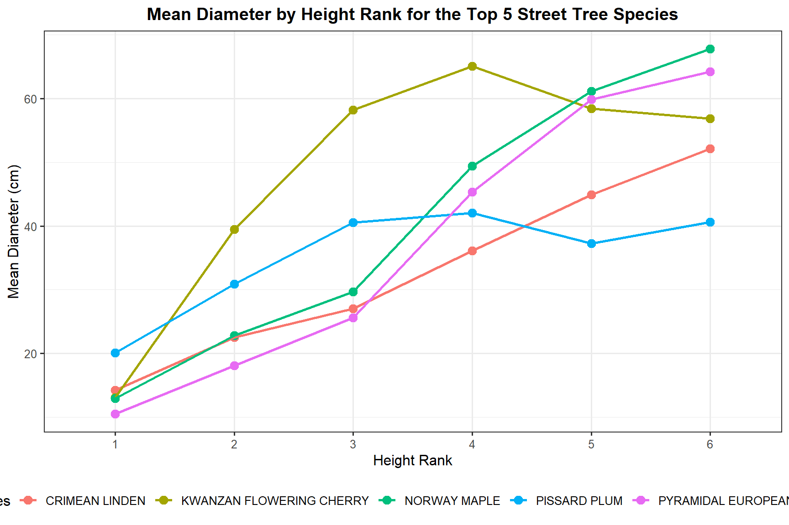
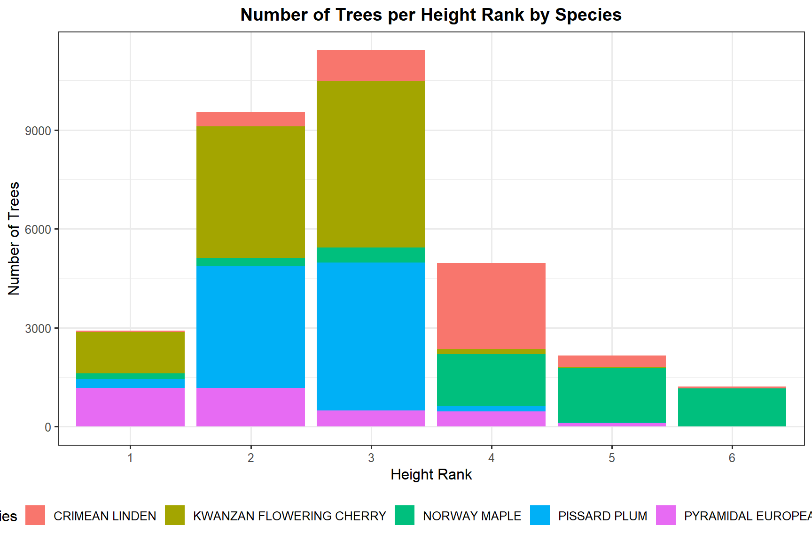
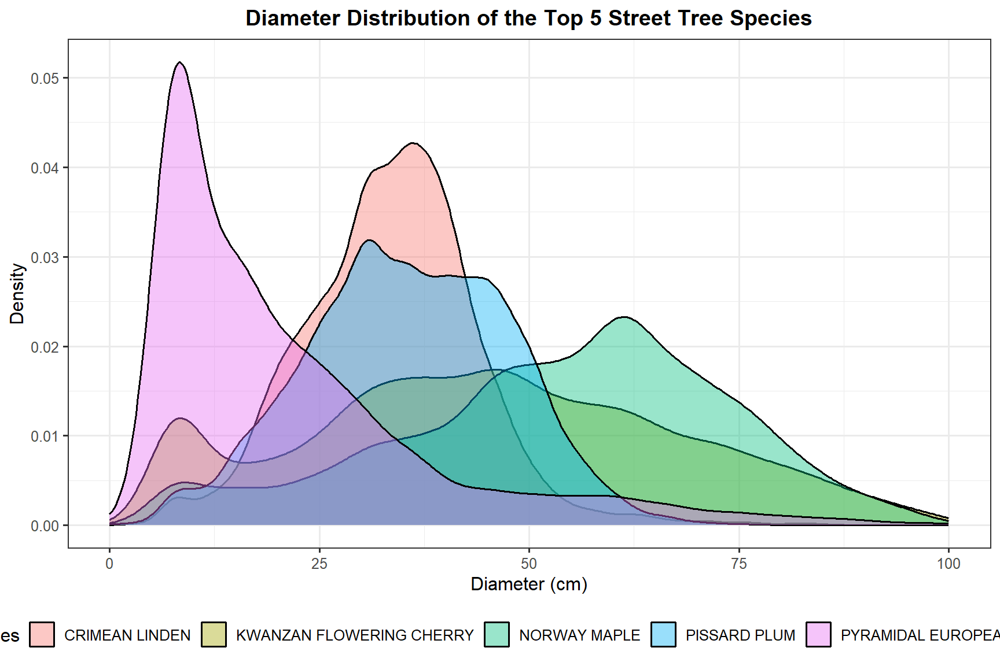
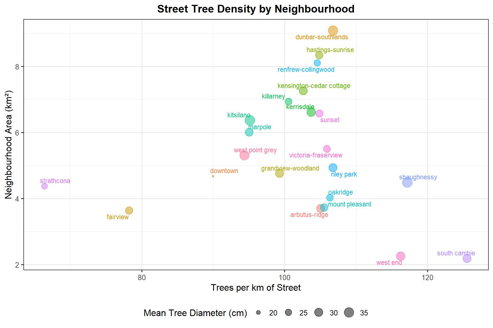

Exploring Vancouver Street Trees
Data Cleaning, Species Analysis, and Neighbourhood Tree Density Using tidyverse
Project Overview
Vancouver’s urban forest is one of the city’s most visible and ecologically significant assets. This project uses the City of Vancouver’s open street tree dataset to explore patterns in species composition, tree size, and the spatial distribution of trees across neighbourhoods.
The analysis works through a full tidyverse workflow: reshaping messy data into tidy format, cleaning unrealistic values, computing summary statistics by species and neighbourhood, and building a series of visualizations that reveal how Vancouver’s street trees vary across the city. The final part of the analysis brings in street length and neighbourhood area data to calculate tree density per kilometre of street, giving a more meaningful picture of how well-treed each neighbourhood actually is relative to its size.
Dataset
The data comes from the Vancouver City Open Data Portal and covers trees on public streets across the city. Each record includes a tree ID, species (latin and common name), diameter at breast height (in inches), height rank (0 to 10), the street name, and the neighbourhood. Four supporting files are also used for street length and neighbourhood area.
Packages
library(tidyverse)
library(ggrepel)Data Preparation
Reshaping to Tidy Format
The raw trees_count.csv file stores neighbourhood names as column headers rather than as values in a column. This is wide format and not tidy. I used pivot_longer() to collapse all neighbourhood columns into two columns: one for neighbourhood name and one for tree count.
trees_count <- read.csv(file.path(data_path, "trees_count.csv"))
trees_count_longer <- pivot_longer(trees_count,
cols = 2:23,
names_to = "neighborhood",
values_to = "trees_count")
trees_count_longer# A tibble: 6,226 × 3
species neighborhood trees_count
<chr> <chr> <int>
1 ABIES arbutus.ridge 2
2 ABIES downtown 1
3 ABIES dunbar.southlands 11
4 ABIES fairview 7
5 ABIES grandview.woodland 4
6 ABIES hastings.sunrise 4
7 ABIES kensington.cedar.cottage 15
8 ABIES kerrisdale 5
9 ABIES killarney 4
10 ABIES kitsilano 17
# ℹ 6,216 more rowsSimilarly, trees_height_diam.csv stores height rank and diameter as rows in a single attribute column instead of as separate variables. I used pivot_wider() to give each attribute its own column.
trees_h_d <- read.csv(file.path(data_path, "trees_height_diam.csv"))
trees_h_d_wider <- pivot_wider(trees_h_d,
names_from = "attribute",
values_from = "value")
trees_h_d_wider# A tibble: 146,730 × 4
tree_id species diameter height_rank
<int> <chr> <dbl> <dbl>
1 21422 COLUMNAR NORWAY MAPLE 22 4
2 21425 COLUMNAR NORWAY MAPLE 19 4
3 21427 SYCAMORE MAPLE 14.5 3
4 21428 SYCAMORE MAPLE 16.5 4
5 21432 ENGLISH OAK 28 5
6 21434 SYCAMORE MAPLE 11 3
7 21447 NORWAY MAPLE 17.2 4
8 21452 SYCAMORE MAPLE 17 4
9 21453 THREAD-LEAF CYPRESS 5 2
10 21455 SYCAMORE MAPLE 20 4
# ℹ 146,720 more rowsLoading and Cleaning the Main Dataset
street_trees <- read.csv(file.path(data_path, "street_trees.csv"))
# Renaming columns to clean, consistent names
street_trees <- rename(street_trees,
tree_id = Tree.ID,
street = Street.Name,
neighbourhood = Neighbourh,
species = SpeciesName,
common_name = CommonName,
height_rank = hrank,
diameter_in = Diameter,
year_planted = YearPlanted
)The dataset contains 146730 trees recorded across Vancouver’s public streets.
# Converting diameter to cm
street_trees <- street_trees %>%
mutate(diameter_cm = diameter_in * 2.54)
# Converting height rank to an ordered factor
height_rank_ordered <- sort(unique(street_trees$height_rank))
street_trees <- street_trees %>%
mutate(height_rank = factor(height_rank,
levels = height_rank_ordered,
ordered = TRUE))
# Removing trees with diameter of 0 or more than 300 cm (3 m)
trees_clean <- street_trees %>%
filter(diameter_cm > 0, diameter_cm <= 300)
n_trees <- nrow(trees_clean)Before filtering, 91 trees had a diameter of 0 and 9 trees had a diameter above 3 metres. After removing these unrealistic records, 146630 trees remain in the cleaned dataset.
Species Analysis
Diameter Summary by Species
trees_summary_sp <- trees_clean %>%
group_by(common_name) %>%
summarise(
n_trees = n(),
mean_diam = mean(diameter_cm),
min_diam = min(diameter_cm),
max_diam = max(diameter_cm),
sd_diam = sd(diameter_cm)
)Five Most Common Species
top_5_sp <- trees_summary_sp %>%
arrange(desc(n_trees)) %>%
slice_head(n = 5) %>%
mutate(ntree_per = n_trees / n_trees * 100,
ntree_per = n_trees / nrow(trees_clean) * 100)
top_5_sp %>%
select(common_name, n_trees, ntree_per) %>%
mutate(ntree_per = round(ntree_per, 2)) %>%
rename(`Species` = common_name,
`Count` = n_trees,
`% of Total` = ntree_per) %>%
knitr::kable(caption = "Five most common street tree species in Vancouver.")| Species | Count | % of Total |
|---|---|---|
| KWANZAN FLOWERING CHERRY | 10486 | 7.15 |
| PISSARD PLUM | 8636 | 5.89 |
| NORWAY MAPLE | 5660 | 3.86 |
| CRIMEAN LINDEN | 4423 | 3.02 |
| PYRAMIDAL EUROPEAN HORNBEAM | 3418 | 2.33 |
The most common street tree is KWANZAN FLOWERING CHERRY, making up 7.2% of all trees in the dataset. The top five species together account for 22.2% of the total.
Diameter by Species and Height Rank
I looked at how diameter varies across height ranks for the five most common species, focusing on height ranks 1 through 6.
trees_summary_sp_h <- trees_clean %>%
group_by(common_name, height_rank) %>%
summarise(
n_trees = n(),
mean_diam = mean(diameter_cm),
min_diam = min(diameter_cm),
max_diam = max(diameter_cm),
sd_diam = sd(diameter_cm),
.groups = "drop"
)
trees_summary_trg <- trees_summary_sp_h %>%
filter(common_name %in% top_5_sp$common_name,
height_rank >= 1,
height_rank <= 6)ggplot(trees_summary_trg,
aes(x = height_rank, y = mean_diam, color = common_name, group = common_name)) +
geom_point(size = 3) +
geom_line(linewidth = 0.9) +
labs(
title = "Mean Diameter by Height Rank for the Top 5 Street Tree Species",
x = "Height Rank",
y = "Mean Diameter (cm)",
color = "Species"
) +
theme_bw(base_size = 12) +
theme(legend.position = "bottom",
plot.title = element_text(hjust = 0.5, face = "bold"))
ggplot(trees_summary_trg,
aes(x = height_rank, y = n_trees, fill = common_name)) +
geom_bar(stat = "identity") +
labs(
title = "Number of Trees per Height Rank by Species",
x = "Height Rank",
y = "Number of Trees",
fill = "Species"
) +
theme_bw(base_size = 12) +
theme(legend.position = "bottom",
plot.title = element_text(hjust = 0.5, face = "bold"))
Diameter Distribution by Species
street_trees_trg <- trees_clean %>%
filter(common_name %in% top_5_sp$common_name)
ggplot(street_trees_trg,
aes(x = diameter_cm, fill = common_name)) +
geom_density(alpha = 0.4) +
xlim(c(0, 100)) +
labs(
title = "Diameter Distribution of the Top 5 Street Tree Species",
x = "Diameter (cm)",
y = "Density",
fill = "Species"
) +
theme_bw(base_size = 12) +
theme(legend.position = "bottom",
plot.title = element_text(hjust = 0.5, face = "bold"))
Kwanzan Flowering Cherry is strongly skewed towards smaller diameters, meaning most of these trees are relatively young or small. Maple shows a much wider spread, suggesting a greater range of tree ages and sizes across the city.
Neighbourhood Analysis
Tree Density per Kilometre of Street
To compare how tree-rich each neighbourhood is relative to its street network, I joined the tree count summary with total street length data and calculated the number of trees per kilometre of street.
# Street length by neighbourhood (converted to km)
street_length <- read.csv(file.path(data_path, "public_street_length.csv"))
street_length_tot <- street_length %>%
group_by(neighbourhood) %>%
summarise(total_length = sum(street_length) / 1000, .groups = "drop")
# Tree summary by neighbourhood
trees_summary_nei <- trees_clean %>%
group_by(neighbourhood) %>%
summarise(
n_trees = n(),
mean_diam = mean(diameter_cm),
min_diam = min(diameter_cm),
max_diam = max(diameter_cm),
sd_diam = sd(diameter_cm),
.groups = "drop"
)
# Joining and computing tree density
trees_dens_nei <- trees_summary_nei %>%
inner_join(street_length_tot, by = "neighbourhood") %>%
mutate(tree_dens = n_trees / total_length)# Neighbourhood area data
nei_area <- read.csv(file.path(data_path, "local_area_areakm2.csv")) %>%
rename(neighbourhood = area_name)
nei_area_df <- trees_dens_nei %>%
inner_join(nei_area, by = "neighbourhood") %>%
select(neighbourhood, mean_diam, tree_dens, area_km2)ggplot(nei_area_df,
aes(x = tree_dens, y = area_km2,
size = mean_diam, color = neighbourhood)) +
geom_point(alpha = 0.5) +
geom_text_repel(aes(label = neighbourhood, color = neighbourhood),
size = 3, show.legend = FALSE) +
scale_size_continuous(name = "Mean Tree Diameter (cm)") +
labs(
title = "Street Tree Density by Neighbourhood",
x = "Trees per km of Street",
y = "Neighbourhood Area (km²)"
) +
theme_bw(base_size = 12) +
theme(legend.position = "bottom",
plot.title = element_text(hjust = 0.5, face = "bold")) +
guides(color = "none")
South Cambie has the highest street tree density in the city, though its small area means it contributes relatively little to the overall count. Dunbar-Southlands and Renfrew-Collingwood have both high tree density and large areas, making them the most significant contributors to Vancouver’s urban forest. Downtown has notably smaller mean tree diameters, making it the least interesting neighbourhood for someone looking to live among mature, large-diameter trees.
Summary
Working through this dataset gave me a clear picture of how Vancouver’s street tree inventory is distributed across species and space. The Kwanzan Flowering Cherry dominates in count but tends to be small in diameter, while Maple trees show more variability in size, suggesting older planting history in some neighbourhoods. The neighbourhood-level analysis revealed that tree density per kilometre of street varies considerably across the city, and that area alone is not a reliable predictor of how well-treed a neighbourhood is. Combining tree counts, street length, and neighbourhood area together gave a much more informative view of where Vancouver’s urban forest is most concentrated.